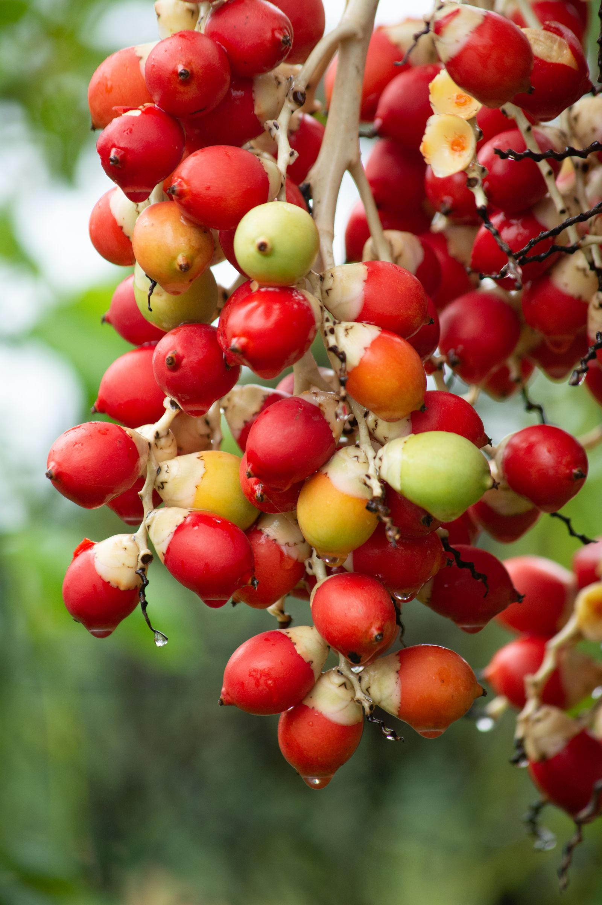

Most popular
Chali Supari
Whole arecanut dried to specification. Consistent colour, low moisture.
Grades A · B · C
→
Farm-gate to global markets
TAS Arecanut Traders sources, grades and ships quality arecanut and supari from our partner growers to wholesalers, exporters and retail brands — with the consistency your business can rely on.
What we supply

Who we are
We are a dedicated arecanut and supari trading house. Our buyers work directly with growers across the belt, grade every lot at our facility, and deliver consistent quality — bag to bag, season to season.
Our products
From raw farm lots to polished supari — we stock the grades that move in your market.
Whole arecanut dried to specification. Consistent colour, low moisture.

Polished, clean-sliced supari preferred in international markets.

Round, uniform nuts with high bulk density — a trader favourite.
Why choose us
Every lot is moisture-tested and size-graded, so what you order is what you receive — every time.
Our own packing and logistics network keeps lead times short across all major markets.
Working farm-gate means fair prices for growers and better rates for you.
Gunny, PP, jute and export cartons in the lot sizes your supply chain needs.
FSSAI-aligned practices and documentation to support your audits and exports.
Clear, honest market-based quotes with no hidden charges on your loads.
How we work
We buy directly from partner growers at the peak of the season.
Lots are sorted by size, colour and moisture at our facility.
Drying, polishing and slicing as per the required grade.
Sealed in gunny, PP or export cartons with lot marking.
Freight booked and tracked to your warehouse or port.
Word from our buyers
"Consistent chali quality across twelve loads this year. Moisture has been spot-on every single time."
"Their export-grade white supari and packing paperwork make container loading genuinely stress-free."
"Fair rates and honest grading. We moved our full season purchase to TAS Arecanut last year."
Tell us the grade and quantity you need — we'll get you a market-fair quote within one business day.
Get Your Quote